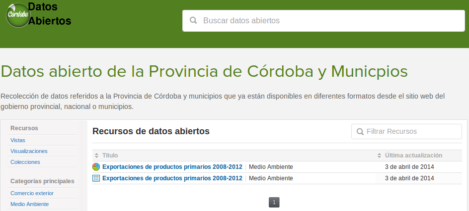
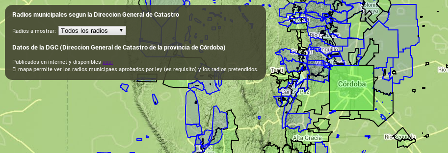
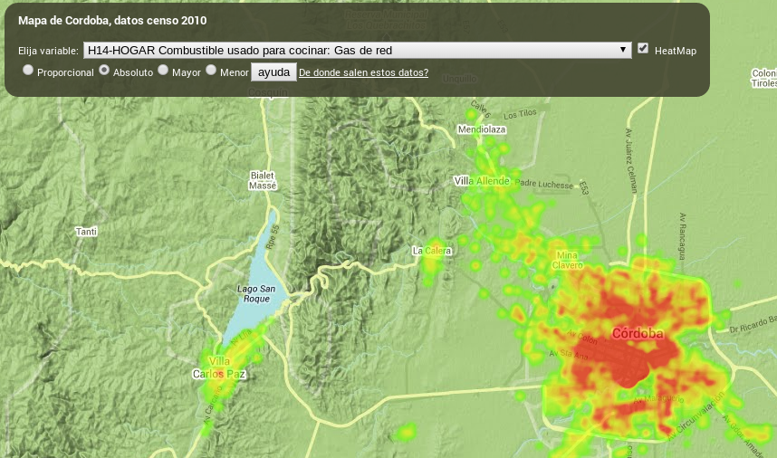

Sobre el hackathon
La información sobre el hackathon se encuentra aquí
Puedes ver el panel de proyectos aqui
[DATOS] Datos de Córdoba en junar.com
Puede verse aqui: cordoba.opendata.junar.com
Los datos fueron extraidos del sitio de estadísticas de Córdoba y posprocesados para colocar en la plataforma Junar
Como los datos son mas de 400 sets solo se colocaron algunos. Si alguien desea colaborar con este proceso puede descargar TODOS los datos crudos desde aqui
[CODIGO] Municipios de Córdoba
Los radios municipales de Córdoba estan en conflicto, al parecer más del, 50% del territorio no pertenece a ningún municipio
Muchas de esas tierras son productivas ¿A quién le pagan impuestos municipales?
Puede verse aqui: hackathonfopea.github.io/radios-municipales-de-cordoba
Ver el código aqui: github.com/HackathonFOPEA/radios-municipales-de-cordoba
[CODIGO] Datos del censo 2010
Puede verse aqui: hackathonfopea.github.io/CensoCordoba2010
Ver el código aqui: github.com/HackathonFOPEA/CensoCordoba2010